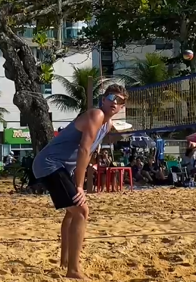

Olá! Meu nome é Kayke Geller Mantovani. Tenho 19 anos e essa é a minha página pessoal.
Desejo me tornar Programador. Estou me preparando para alcançar esse objetivo estudando e me aperfeiçoando.
Gosto de Jogar vôlei de praia, jogar jogos online, e conversar!
Estudei o ensino fundamental 1 e 2 na escola Conhecer Carinho&cia. O ensino médio fiz o Primeiro ano na escola Francelina Setubal e o segundo e terceiro ano na Escola Seb. Atualmente estou cursando Ciência da Computação na Universidade Vila Velha (UVV).
Nunca participei de Eventos Academicos Porem estou ansioso para o meu Primeiro este ano!
| Lógica para Computação |
|---|
| Construção de Software para Web |
| Design e Desenvolvimento de Banco de Dados I |
| Experiência e Interface com o Usuário |
| Fundamentos de Tecnologia da Computação |
| Textos Científicos: Aspectos Metodológicos e Linguísticos |
Quero trabalhar na área de Programação e meu desejo é trabalhar em uma empresa do exterior, ganhando em dólares, no Brasil.
| 📄Meu Curriculo | 📞Meus Contatos | 😺Meu GitHub | 💼 Meus Serviços |